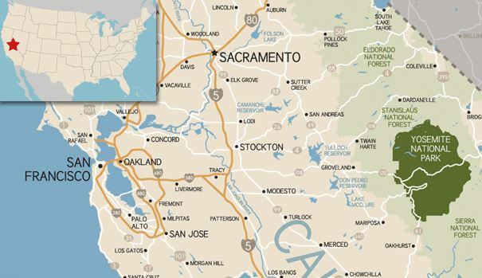

Соединенные Штаты Америки, и в частности Калифорния, славятся богатством своей природы и количеством национальных парков и заповедников. Хотя в Канаде, к слову, заповедников и парков много больше.
Всего в стране насчитывается более 300 национальных парков, заповедников, заказников и памятников природы. Четырнадцать национальных парков США включены в Список Всемирного наследия ЮНЕСКО.
Одним из таких парков, в который мы с ребятами отправились, стал Йосемитский национальный парк.
Этот парк является одним из первых природных заповедников США, благодаря своей уникальной девственной природе (95 % площади парка — дикая) с 1984 года находится под защитой ЮНЕСКО. Заповедник с самым высоким водопадом в Северной Америке и 1300 км туристических маршрутов расположился на склонах гор Сьерра-Невада, в штате Калифорния.
На территории парка обитают 400 видов животных, среди которых: олени, рысь, черный медведь.
Климат Йосемити средиземноморский, большая часть осадков приходится на мягкую зиму, лето — сухое и жаркое. В горах снежный покров образуется в ноябре и держится до марта — начала апреля. Самая низкая температура — зимой, в январе и декабре от -3 °C до +9 °C, летом — от +10 °C до +30 °C. Лучшее время для посещения — осень.
Поэтому осенью, в конце октября, мы и отправились посетить столь удивительное место. Добирались мы до Йосемити на двух машинах из Лос-Анжелеса, а точнее из отеля Extended Stay America в Сайпресе. Расстояние приблизительно 500 км, путь занял 6 часов. Ехать пришлось сначала по 405-й, а затем основной путь был пройден по 5-й трассе (highway).
Парк открыт 24 часа в сутки, круглый год. С ноября по май и июнь некоторые дороги закрыты в связи с погодными условиями. Как я уже сказал ранее, мы посетили парк в октябре, было довольно жарко, тем не менее снег мы встретили.
Кстати, если в парке много снега, то обязательно следует позабодиться о дополнительном снаряжении. Вам стоит найти цепь на колеса своего автомобиля, т.к. без цепи могут не пустить на территорию парка. Такие цепи можно взять на прокат недалеко от въезда в парк.

Долина Йосемити занимает только 1 % от общей территории парка, но именно туда направляется большинство посетителей. Самая популярная точка маршрута (особо любимая скалолазами) — гранитная скала Эль-Капитан высотой 2307 м, хорошо видимая из любой части долины.
Вообще во время въезда на территорию парка местные служащие выдают карту территории с обозначением всех точек осмотра (view points), с которых открывается замечательный вид, и фото получаются по-настоящему обалденными.

В верхней части парка находятся живописные Туоломнские луга (Tuolumne Meadows), луга Дана (Dana Meadows), горные хребты Кларк (Clark Range) и Кафедрал (Cathedral Range) и гребень Куна (Kuna Crest). Интересные туристические маршруты Сьерра-Крест и Пасифик-Крест, проходящие через парк Йосемити по гребню гор.
В парке находятся три рощи древних деревьев секвойядендрон: Марипоса (Mariposa Grove, 200 деревьев), Туоломни (Tuolumne Grove, 25 деревьев) и Мерсед (Merced Grove, 20 деревьев). Секвойядендрон — самое массивное и одно из самых высоких и долгоживущих деревьев в мире. Также туристов привлекают многочисленные водопады: Йосемитский (739 м), Уапама (520 м), Сноу-Крик (652 м). Самый живописный — водопад Брайдлвейл (190 м, в переводе «фата невесты»), хорошо видимый с недалеко проходящей дороги.
Парк предлагает около 1300 км прогулочных троп, 560 км автомобильных дорог. Здесь можно заняться скалолазанием, рыбалкой, рафтингом, покататься на лошадях и велосипедах, лыжах и снегоступах. На территории парка есть лоджи, магазины, рестораны.